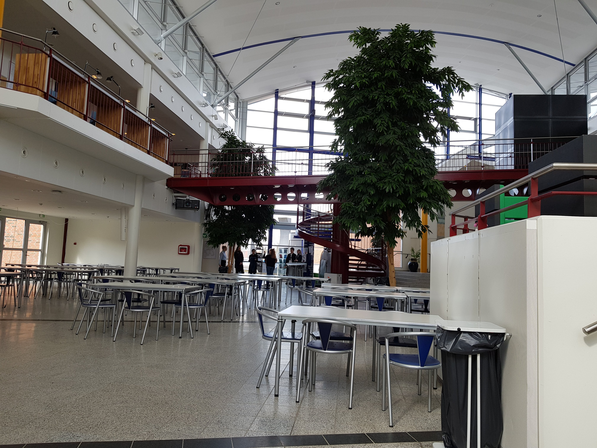

2018
Ano em que fiz intercâmbio semestral em Aalborg

Foi um ano bem importante pra mim, nos primeiros seis
meses desse ano, morei em Aalborg, na Dinamarca,
e fiz alguns cursos de Cultura Internacional na
faculdade de lá. Eu simplesmente amei a cidade,
os meus estilo e qualidade de vida eram fantásticos.
E depois, ao final do intercâmbio, ainda recebi a
visita da minha família.